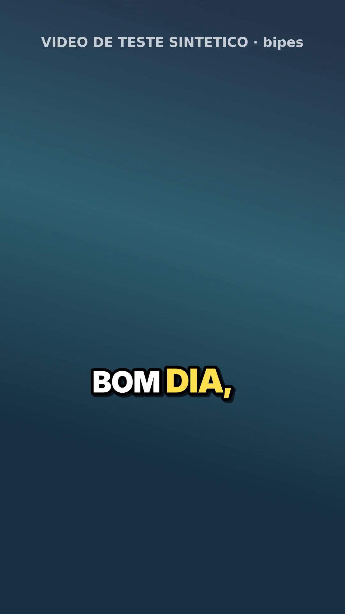
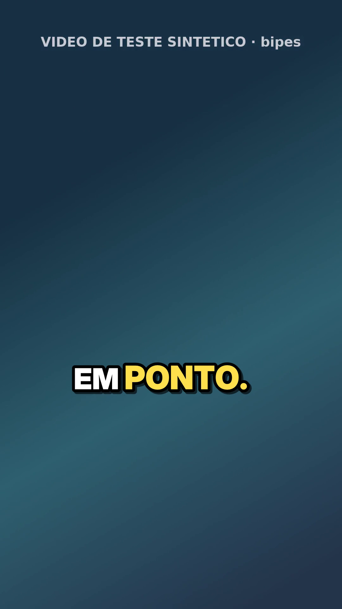
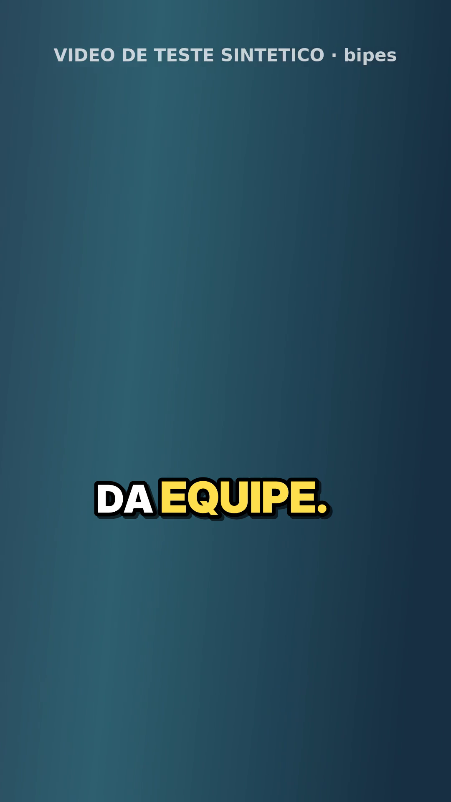
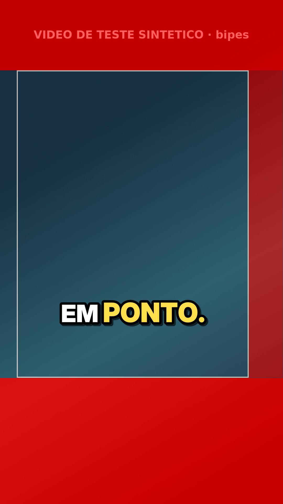

<title>Nuvem · Fred · legenda v2</title>
<meta name="claude:viewport-fit-sides" content="cover">
<link rel="preconnect" href="https://fonts.googleapis.com">
<link rel="preconnect" href="https://fonts.gstatic.com" crossorigin>
<link rel="stylesheet" href="https://fonts.googleapis.com/css2?family=Public+Sans:wght@400;600;700&family=IBM+Plex+Mono:wght@400;500&display=swap">
<style>
/* Layout: relatório de uma coluna (~70ch), mesmo sistema visual da série "Nuvem"; resumo em chips, tabelas largas com rolagem própria */
:root {
  --bg: #f6f8f9; --surface: #ffffff; --fg: #17222b; --muted: #55636e; --line: #d9e1e6;
  --accent: #0d6b6e; --ok: #1f7a3d; --ok-bg: #e3f3e8; --warn: #9a5b00; --warn-bg: #fdf0d9;
  --bad: #a3271f; --bad-bg: #fbe5e3; --code-bg: #eef2f4;
  --sans: "Public Sans", "Segoe UI", system-ui, sans-serif;
  --mono: "IBM Plex Mono", ui-monospace, "SFMono-Regular", Menlo, monospace;
}
@media (prefers-color-scheme: dark) { :root:not([data-theme="light"]) {
  --bg: #11181d; --surface: #182229; --fg: #e4ebef; --muted: #9aa9b3; --line: #2a3943;
  --accent: #5cc4c0; --ok: #6fd18e; --ok-bg: #173523; --warn: #f0b85a; --warn-bg: #3a2c12;
  --bad: #f08a80; --bad-bg: #3d1d1a; --code-bg: #1f2b33; color-scheme: dark; } }
:root[data-theme="dark"] {
  --bg: #11181d; --surface: #182229; --fg: #e4ebef; --muted: #9aa9b3; --line: #2a3943;
  --accent: #5cc4c0; --ok: #6fd18e; --ok-bg: #173523; --warn: #f0b85a; --warn-bg: #3a2c12;
  --bad: #f08a80; --bad-bg: #3d1d1a; --code-bg: #1f2b33; color-scheme: dark; }
* { box-sizing: border-box; }
body { background: var(--bg); color: var(--fg); font-family: var(--sans); font-size: 15px; line-height: 1.6; padding-block: 32px 56px; padding-left: max(16px, env(safe-area-inset-left, 0px)); padding-right: max(16px, env(safe-area-inset-right, 0px)); }
main { max-width: 760px; margin: 0 auto; display: grid; gap: 28px; }
header { display: grid; gap: 8px; }
.eyebrow { font: 500 12px/1 var(--mono); letter-spacing: .08em; text-transform: uppercase; color: var(--accent); }
h1 { font-size: 28px; line-height: 1.2; margin: 0; text-wrap: balance; }
h2 { font-size: 17px; margin: 0 0 8px; text-wrap: balance; }
h3 { font-size: 15px; margin: 0; }
p { margin: 0; max-width: 68ch; }
section { display: grid; gap: 10px; min-width: 0; }
.lead { color: var(--muted); }
.chips { display: flex; flex-wrap: wrap; gap: 8px; }
.chip { font: 500 12px/1 var(--mono); padding: 6px 10px; border-radius: 999px; white-space: nowrap; }
.v { font: 500 11px/1 var(--mono); padding: 3px 7px; border-radius: 999px; white-space: nowrap; display: inline-block; }
.ok { background: var(--ok-bg); color: var(--ok); }
.warn { background: var(--warn-bg); color: var(--warn); }
.bad { background: var(--bad-bg); color: var(--bad); }
.neutro { background: var(--code-bg); color: var(--muted); }
.tbl { overflow-x: auto; border: 1px solid var(--line); border-radius: 8px; background: var(--surface); }
table { border-collapse: collapse; width: 100%; font-size: 14px; }
.largo table { min-width: 760px; }
th, td { text-align: left; padding: 9px 12px; border-bottom: 1px solid var(--line); vertical-align: top; }
tr:last-child td { border-bottom: 0; }
th { font: 500 12px/1.3 var(--mono); color: var(--muted); letter-spacing: .04em; text-transform: uppercase; }
td.num { font-variant-numeric: tabular-nums; font-family: var(--mono); font-size: 13px; white-space: nowrap; }
code, .mono { font-family: var(--mono); font-size: 13px; }
code { background: var(--code-bg); padding: 1px 5px; border-radius: 4px; overflow-wrap: anywhere; }
pre { background: var(--code-bg); padding: 12px 14px; border-radius: 8px; overflow-x: auto; margin: 0; font: 13px/1.5 var(--mono); }
ul, ol { margin: 0; padding-left: 20px; display: grid; gap: 6px; max-width: 70ch; }
a { color: var(--accent); overflow-wrap: anywhere; }
a:focus-visible { outline: 2px solid var(--accent); outline-offset: 2px; }
.nota-fonte { color: var(--muted); font-size: 13px; }
footer { color: var(--muted); font-size: 13px; }

.quadros { display: grid; grid-template-columns: repeat(4, minmax(0, 1fr)); gap: 12px; }
.quadros figure { margin: 0; display: grid; gap: 6px; min-width: 0; }
.quadros img { width: 100%; max-width: 100%; aspect-ratio: 9 / 16; object-fit: cover; border-radius: 8px; border: 1px solid var(--line); background: #000; display: block; }
figcaption { font: 12px/1.4 var(--mono); color: var(--muted); }
@media (max-width: 560px) { .quadros { grid-template-columns: repeat(2, minmax(0, 1fr)); } }
</style>

<main>
  <header>
    <div class="eyebrow">Nuvem · Fred · tarefa 23 · 14/10/2026</div>
    <h1>Legenda v2</h1>
    <p class="lead">A segunda versão do legendador palavra a palavra, depois do teste da v1 com dois vídeos reais em 14/10. São sete defeitos corrigidos, cada um com teste. Os ajustes do estilo "B" viram padrão. A revisão das palavras duvidosas é obrigatória antes de queimar, e o script avisa quando o vídeo já tem legenda da edição.</p>
    <div class="chips">
      <span class="chip ok">29 testes na v2</span>
      <span class="chip ok">22 deles falham na v1</span>
      <span class="chip ok">defeito do PyAV 19 reproduzido aqui</span>
      <span class="chip warn">sem vídeo real nem Whisper real nesta nuvem</span>
    </div>
  </header>

  <section>
    <h2>Quadros do exemplo (sintético, 1080×1920)</h2>
    <div class="quadros">
      <figure><figcaption>print_1</figcaption></figure>
      <figure><figcaption>print_2</figcaption></figure>
      <figure><figcaption>print_3</figcaption></figure>
      <figure><figcaption>guia_2 (só PNG)</figcaption></figure>
    </div>
    <p class="nota-fonte">A legenda fica a 62% da altura, com 111 px, Arial Black (aqui Inter Display Black, a fonte pesada desta máquina), destaque #FFE14D e blocos de 2 a 3 palavras. O "5:45" do roteiro saiu "5H45". O áudio é de bipes no lugar da voz, porque não há espeak-ng aqui, e o tempo das palavras vem do gabarito.</p>
  </section>

  <section>
    <h2>Os sete defeitos</h2>
    <div class="tbl largo"><table>
      <thead><tr><th>#</th><th>Defeito</th><th>Correção</th></tr></thead>
      <tbody>
        <tr><td class="num">1</td><td>PyAV 19 quebra o faster-whisper 1.2.1 (<code>metadata_errors</code>)</td><td>O áudio vem do ffmpeg em float32 mono 16 kHz e entra como array. Reproduzido aqui com o 1.2.1 e o av 19.0.1. Mais <code>"av&lt;16"</code> na instalação</td></tr>
        <tr><td class="num">2</td><td><code>--guia</code> pintava o MP4</td><td>As caixas vão só em <code>_guia_N.png</code></td></tr>
        <tr><td class="num">3</td><td>Largura de letra 0,72 quebrava linha sem precisar</td><td>0,50 do Fontsize do libass, e o espaço conta meia letra; 16 caracteres cabem numa linha</td></tr>
        <tr><td class="num">4</td><td>"5 ,45," partido</td><td>Junta o token que começa com pontuação ou que continua número; hora vira "5H45"; preço fica como está</td></tr>
        <tr><td class="num">5</td><td>Pasta <code>medium</code> lida como modelo</td><td>O nome conhecido vira o id do HuggingFace</td></tr>
        <tr><td class="num">6</td><td>Base de 35% travava a legenda em ~59%</td><td>Orgânico com base de 25% e posição 0,62; <code>--zona anuncio</code> mantém os 35%</td></tr>
        <tr><td class="num">7</td><td>Palavra de duração zero não acendia</td><td>Mínimo de 0,08 s por palavra; se não couber, o tempo do bloco é repartido</td></tr>
      </tbody>
    </table></div>
  </section>

  <section>
    <h2>Revisão em dois passos</h2>
<pre>python legenda_reels.py revisar video.mp4 --termos "Cheetos, Miojo, pappardelle"
#  -> video.palavras.json ("revisado": false) e video.revisar.txt:
#     00:00.57   0.31  chitos     Comprei um ⟦chitos⟧ no mercado.
python legenda_reels.py queimar video.mp4 --prints 3 --guia</pre>
    <p>O <code>queimar</code> recusa enquanto o <code>palavras.json</code> não tiver <code>"revisado": true</code> ou alguma correção. O <code>--sem-revisar</code> existe, é explícito e avisa quantas palavras duvidosas ficaram sem conferir. Os termos do roteiro entram no <code>initial_prompt</code> e nos <code>hotwords</code>, com a dica de fala coloquial: "tá, tô, pra, né" ficam como foram ditos.</p>
  </section>

  <section>
    <h2>Área segura</h2>
    <p>O único número oficial é o da Meta para <b>anúncio</b> em Reels: "deixe ~14% do topo, 35% da base e 6% de cada lado" livres. Veio do trecho do buscador da ficha de imagem; a página não abriu nesta rede.</p>
    <ul>
      <li>Para orgânico, não há orientação oficial. O padrão da v2 (base de 25%) é o que o teste do PC validou.</li>
      <li>A faixa dos botões à direita está <b>não verificada</b>. A v2 reserva 12% à direita; as fontes não oficiais dizem de 120 a 230 px.</li>
      <li>Para fechar o número, o caminho é o gabarito oficial "Reels safe zone checker".</li>
    </ul>
  </section>

  <section>
    <h2>Limitações e o que não deu para verificar</h2>
    <ul>
      <li>O modelo do Whisper não baixa nesta nuvem (o HuggingFace está bloqueado). A chamada foi conferida contra o faster-whisper 1.2.1 instalado, com um modelo falso. Os números de acerto são os medidos no PC.</li>
      <li>O aviso de legenda queimada é heurística: acusou o vídeo sintético com legenda e a própria saída, e não acusou o vídeo limpo. Em vídeo real (prateleira, placa) pode acusar sem ter legenda.</li>
      <li>facebook.com, instagram.com e as ferramentas de área segura estavam bloqueados; a pesquisa veio de trecho do buscador (8 buscas).</li>
      <li>Não há nome de pessoa nos arquivos. Todo o material é sintético.</li>
    </ul>
  </section>

  <section>
    <h2>Arquivos</h2>
    <div class="tbl"><table><tbody>
      <tr><td><code>para-a-00.md</code></td><td>Resumo para despachar</td></tr>
      <tr><td><code>v2/legenda_reels.py</code>, <code>v2/gerar_teste.py</code>, <code>v2/test_legenda_reels.py</code>, <code>v2/LEIA-ME.md</code></td><td>A v2 completa, com instalação e uso</td></tr>
      <tr><td><code>patches/v1-para-v2.diff</code></td><td>O diff da v1 (tarefa 8) para a v2, que aplica limpo</td></tr>
      <tr><td><code>testes-antes-depois.md</code></td><td>Os 29 testes contra a v1 e a v2</td></tr>
      <tr><td><code>area-segura.md</code></td><td>O que é oficial e o critério usado</td></tr>
      <tr><td><code>exemplo/</code></td><td>O vídeo sintético legendado, o <code>.ass</code>, o gabarito e os PNG</td></tr>
    </tbody></table></div>
  </section>

  <footer>Gerado numa sessão de nuvem do Claude Code. Todo o material é sintético; nenhum vídeo do perfil foi usado nesta sessão.</footer>
</main>
